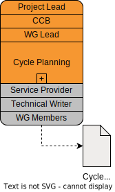
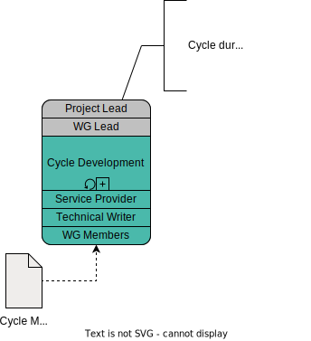
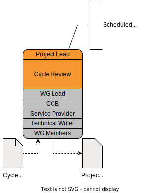
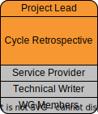

Development phase details — Development Cycle
Phase diagram
The development phase consists of the Setup Step, followed by the main development loop (Main Cycle). This page covers the Development Cycle and all its sub-steps as well as participating in relevant Controlling Meetings. Each sub-step is further detailed on its respective page.
While the project is actively being developed, it follows the main development cycle of planning, developing, and reviewing.
Occasionally, there are project-independent events happening, such as "Controlling Meetings", where each project may or must participate in.
In particular, there are the CGSim Controlling Meetings (mandatory for all Simulation Domain projects during the Development phase) and the TSC Controlling Meetings.
Typically, projects present their current (i.e. the latest updated) status report to allow the respective panel to monitor and intervene, if necessary.
Development phase timeline
Each project defines their own timeline during the Proposal phase.
Therefore, there is no standard Development phase timeline.
However, there are typical categories for project length.
These are shown below.
Additionally, a project may request additional time if the project’s content turns out to be more complex than anticipated.
Development phase steps
The Development phase consists of the following steps, which are explained in detail in their own sections:
-
Controlling Meetings
Cycle planning
 |
Purpose |
To plan the next development cycle on both a high and a low level in form of a milestone |
|---|---|---|
Responsible |
|
|
Involved |
|
| This is a multi-step task. |
The Project Lead, together with the CCB, specifies the high level goals for the project’s next development cycle.
They then present and discuss the created milestone with the WG Leads.
After the overall goals have been specified and communicated, the WG Leads specify the detailed goals for the respective involved Working Groups.
They then present and discuss both the global and the detailed goals of the milestone with the WG members, the involved Service Providers, and the Technical Writers.
Cycle development
 |
Purpose |
To develope the content for the planned milestone. |
|---|---|---|
Responsible |
||
Involved |
| This is a multi-step task. |
During the development cycle, each work group individually works on their respective topics (if any).
Each work group will also meet regularly in its Work Group Meetings.
Note that each work group may define the intervals and modalities of their meetings for themselves.
To coordinate activities between different Work Groups, ASAM recommends that all WG Leads meet regularly during each cycle.
Each project may define their own intervals for WG Lead meetings.
In addition to that, the CCB may meet regularly or triggered by specific events to review and merge urgent topics as well as discuss other project-related topics.
Similarly to the Work Group Meetings, each project may define their own intervals for CCB meetings.
Cycle review
 |
Purpose |
To review the achievements for the planned milestone and to create a project status report. |
|---|---|---|
Responsible |
|
|
Involved |
|
Each cycle ends with a project meeting where the project process is assessed and the project status report is updated.
The project status is then presented at the next CGSim Controlling Meeting.
See Development cycle — Review.
| This is a Full Project Meeting. The Full project meeting/workshop guidelines apply. |
Cycle retrospective
 |
Purpose |
To discuss how the latest cycle went and find out, whether processes can and must be improved or not. |
|---|---|---|
Responsible |
||
Involved |
No process is perfect, and every initial assumption and definition may be imperfect. For this reason, ASAM recommends doing a Cycle Retrospective meeting after every cycle.
The idea is to identify methods, processes, and topics that proved to work great and should be kept as well as topics that turned out to be inefficient or problematic and should be changed or improved. This way, each project can improve not only its content, but also its way of working together to become more efficient and increase their work quality over time. Ideally, these lessons learned are documented and, if generally applicable, used to improve this Project Guide around the project’s conclusion.
Here are some pages containing tips on doing a retrospective:
| This is a Full Project Meeting. The Full project meeting/workshop guidelines apply. |
TSC Controlling Meeting
|
Purpose |
To update the TSC on the current project status. |
|---|---|---|
Responsible |
||
Involved |

TODO
See TSC Controlling Meeting.
CGSim Controlling Meeting
|
Purpose |
To present the current project status and update the CGSim and optionally escalate problems to the TSC. |
|---|---|---|
Responsible |
||
Involved |
The Project Lead regularly updates the CGSim about the current project status (updated at the latest Cycle review).
In case there is need to find a solution to a problem with the project with direct involvement of ASAM e.V. (e.g. there is a high risk of a delay), the CGSim speaker escalates the topic at the next ASAM TSC meeting.
See CGSim Controlling Meeting